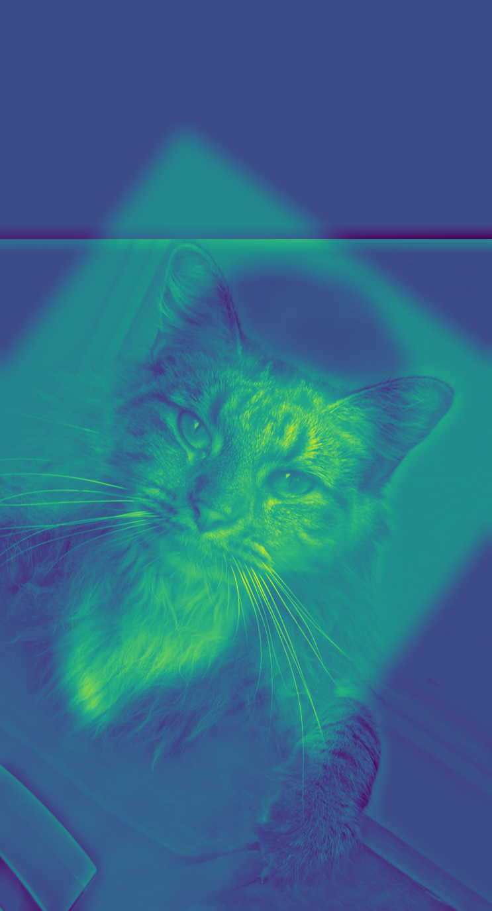
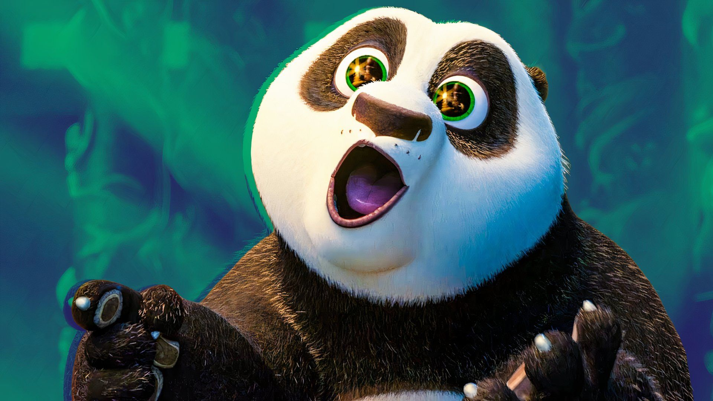
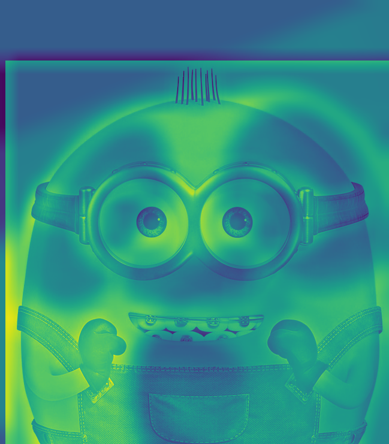
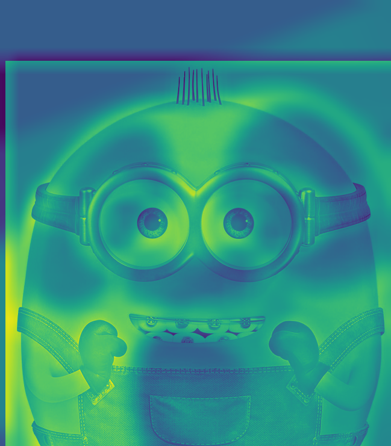

Fun with Frequencies
An exploration of image augmentation through filtering
Gradients
In this section, we utilized the difference operaters to mimic a derivative filter on our images. As the derivatives dX = [-1,1] and dY = [-1;1] are
partial derivatives, they must be computed seperately and combined to find the magnitude of the overall derivitave. The partial derivative is computed by using convolve2d
on the image and derivative kernel. The resulting derivatives are then combined using the Pythagorean theorem. Below are the images showing the directional derivatives
respectively.

These directional derivatives results are then combined using the Pythagorean theorem to generate the overall magnitude of the derivative.The left image is the plain magnitude and the right is the binarized magnitude.
Notice how these derivative images are extremelly jagged. This problem can potentially be solved by first applying a guassian filter on the image before the derivative kernels are applied.

As you can see the resulting images are far less jagged. The lowpass filtering has resulting in a far more usable edge detections algorithm. A further advantage of this is method is that we can accomplish the computation in 1 convolution. Since the convolution is commutative, the derivative can be precomposed into the Gaussian function and applied as one filter. The image below depicts how the compsed filtering yeilds the same results
Sharpening
Below are demonstrations of the image sharpening algorithm. The low-pass filter image is subtracted from the regular image resulting in just the high frequencies highFrequency = Img - lowPass.
This component in added back into the image with an alpha factor to determine the extent of the high frequency.

As an added test, I have also blurred the original image seen above and attempted to sharpen it back to the original
Hybrid Images
In this section, we filter 2 images to isolate high frequencies of one and the low frequencies of the other. Using a hand-tuned threshold frequency, we can combine 2 images such that the distance from the image determines what you see. Below you can see the combination of Po from Kung Fu Panda and Kevin from Minions. Stepping back will result in a clear visual of Po, while being close allows you to see Kevin.Nutmeg and Derek

Combined Derek and Nutmeg
Po and Kevin

Original Po
 Original Kevin

Hybrid Image of Po and Kevin. Kevin in front (HF), Po in back (LF)
Original Kevin

Hybrid Image of Po and Kevin. Kevin in front (HF), Po in back (LF)
This was one of the more successful results. The Fourier transform clearly shows how there is enough of a difference in main frequencies to make this work. There is a significant difference between their frequency distributions, allowing the filter to still retain large amounts of the image.
Croissant and Cookie
I also tried merging a croissant image with a cookie image. This yielded a rather spectacular failure where the align function struggled to match the images. Further, the Fourier transform does not show any significant differences. This made it very hard to find a filter to separate the images and retain structure.

Image Blending
In this section, we expand on the image pyramid idea from the last project to create blending images. 2 Images are taken and a Gaussian and Laplacian stack is generate for each image.
A Gausian stack for a mask is also generated. Each level of the 3 stacks are composed using the following equation laplacianA*(mask) + laplacianB*(1-mask). These images are then combined with the lowest frequency
elements and normalized. The result is shown below.
Oraple


The Orange and Apple images are blended with a mask that divides the images vertically down the middle.
Landscape
I also attempted to apply this to a landscape image where the seam would be the horizon. Cleanly blending these images would mean that it would be impossible to tell that the image came from 2 different landscapes.
Ferrari's New F1 Driver, Vishnu Leclerc
I have always been a huge fan of Formula and decided to take matter into my own hands when it came to my chance in F1. Using a manual mask that outlines my face, I superimposed my face on the image of F1 driver Charles Leclerc.